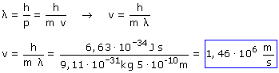

Para que el haz de electrones se comporte como una onda y se difracte, la longitud de su onda asociada tiene que ser como mucho igual a la separación entre iones: 5·10-10 m
Utilizando la relación de De Broglie:
